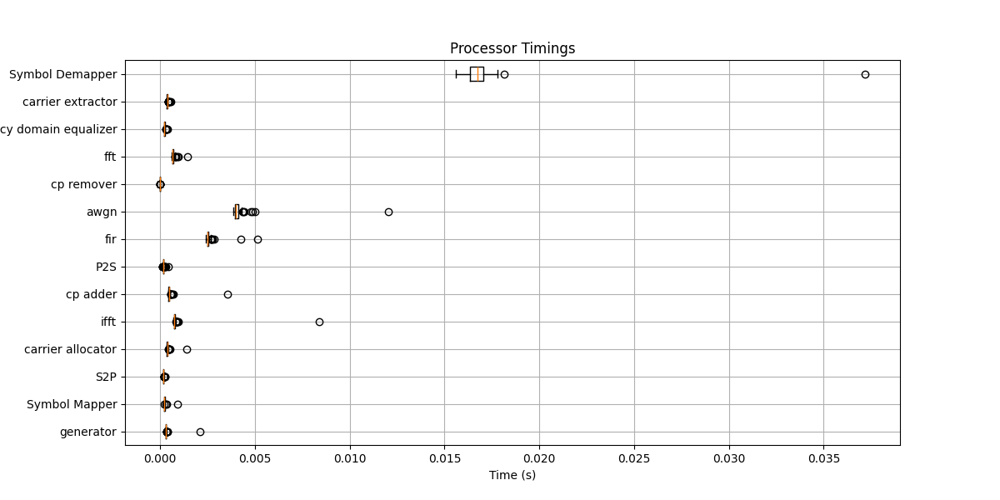

Profiling a Communication Chain#
In this tutorial, we will learn how to profile a communication chain using comnumpy. Profiling allows us to evaluate the computational cost of each processor, helping to identify performance bottlenecks in complex simulations.
We will build an OFDM communication chain with channel effects, run the simulation, and visualize the profiling results.
Introduction#
Import Libraries#
We start by importing the necessary libraries:
import numpy as np
import matplotlib.pyplot as plt
from comnumpy.core import Sequential, Recorder
from comnumpy.core.generators import SymbolGenerator
from comnumpy.core.mappers import SymbolMapper, SymbolDemapper
from comnumpy.core.channels import AWGN, FIRChannel
from comnumpy.core.processors import Serial2Parallel, Parallel2Serial
from comnumpy.core.utils import get_alphabet
from comnumpy.core.metrics import compute_ser
from comnumpy.core.visualizers import plot_chain_profiling
from comnumpy.ofdm.processors import CarrierAllocator, FFTProcessor, IFFTProcessor, CyclicPrefixer, CyclicPrefixRemover, CarrierExtractor
from comnumpy.ofdm.compensators import FrequencyDomainEqualizer
from comnumpy.ofdm.utils import get_standard_carrier_allocation
Define Parameters#
Next, we define the communication and channel parameters:
# parameters
modulation = "QAM"
M = 16 # Modulation order
N_h = 5 # Number of channel taps
N_cp = 10 # Cyclic prefix length
N = 100000 # Number of symbols
sigma2 = 0.01 # Noise variance
alphabet = get_alphabet(modulation, M) # Get alphabet for QAM modulation
carrier_type = get_standard_carrier_allocation("802.11ah_128") # Standard carrier allocation
# extract carrier information
N_carriers = len(carrier_type)
N_carrier_data = np.sum(carrier_type == 1) # Number of data carriers
N_carrier_pilots = np.sum(carrier_type == 2) # Number of pilot carriers
# channel parameters
h = 0.1 * (np.random.randn(N_h) + 1j * np.random.randn(N_h))
h[0] = 1
pilots = 10 * np.ones(N_carrier_pilots) # Pilot values
OFDM Communication Chain#
Define the Chain#
We now build a complete OFDM chain using the Sequential object.
This chain includes mapping, carrier allocation, IFFT/FFT processing, cyclic prefix insertion, channel effects, equalization, and demapping.
chain = Sequential([
SymbolGenerator(M),
SymbolMapper(alphabet),
Serial2Parallel(N_carrier_data),
CarrierAllocator(carrier_type=carrier_type, pilots=pilots),
IFFTProcessor(),
CyclicPrefixer(N_cp),
Parallel2Serial(),
FIRChannel(h),
AWGN(sigma2),
Serial2Parallel(N_carriers + N_cp),
CyclicPrefixRemover(N_cp),
FFTProcessor(),
FrequencyDomainEqualizer(h=h),
CarrierExtractor(carrier_type),
Parallel2Serial(),
SymbolDemapper(alphabet)
])
The chain is composed of the following processors:
SymbolGeneratorGenerates a sequence of integer-valued symbols to transmit.SymbolMapperMaps integers to QAM constellation points.Serial2Parallel/Parallel2SerialReshape data between serial and parallel streams, useful for OFDM.CarrierAllocatorAssigns data and pilot symbols to their designated subcarriers.IFFTProcessor/FFTProcessorPerform the Inverse Fast Fourier Transform and Fast Fourier Transform operations, respectively.CyclicPrefixer/CyclicPrefixRemoverAdd and remove the cyclic prefix to mitigate inter-symbol interference.FIRChannelModels a frequency-selective multipath channel.AWGNAdds white Gaussian noise.FrequencyDomainEqualizerCompensates for channel distortions in the frequency domain.CarrierExtractorExtracts data and pilot carriers after equalization.SymbolDemapperMaps received constellation points back to integer symbols.
Profiling the Chain#
To profile the chain, we use the plot_chain_profiling function.
This function measures the execution time of each processor for a given input size
and produces a bar chart of the results.
# profiling chain
plot_chain_profiling(chain, input=N)
The profiling figure shows the time spent in each block, allowing you to quickly identify which stages of the chain dominate the computation.
{kind=link}
Conclusion#
Congratulations 🎉 You have successfully profiled an OFDM communication chain with comnumpy.
Profiling is a powerful tool to:
Detect computational bottlenecks in complex simulations.
Compare the efficiency of different processors or chain configurations.
Optimize large-scale communication scenarios.
From here, you may want to explore:
Profiling different modulation schemes or OFDM sizes.
Comparing different equalization techniques.
Combining profiling with performance metrics such as SER or BER.